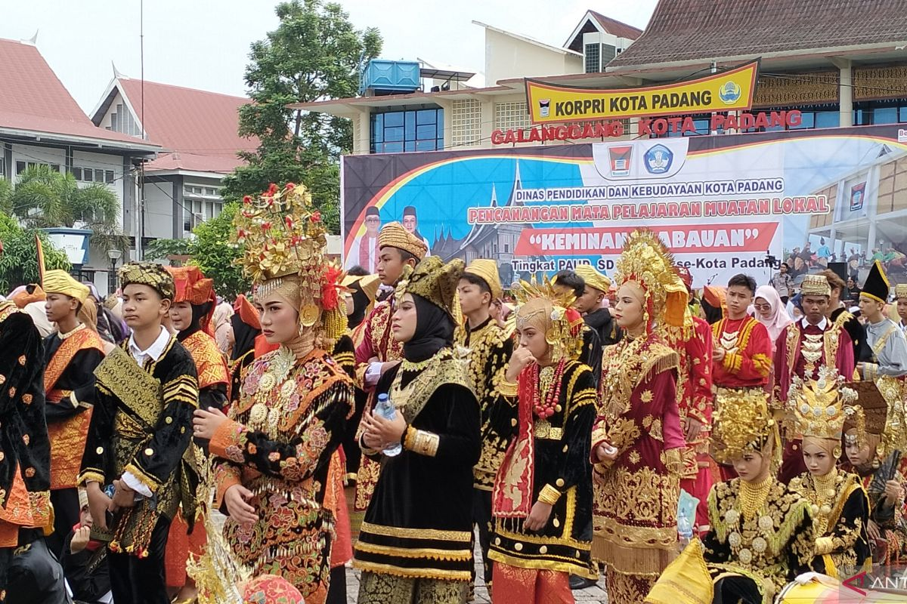
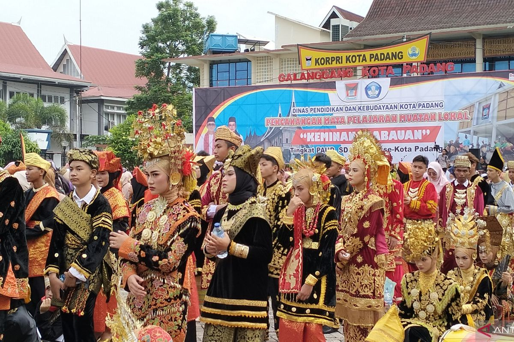

Selamat Datang di Suku Minangkabau
 

Suku Minangkabau adalah salah satu suku terbesar di Indonesia yang berasal dari Provinsi Sumatera Barat. Masyarakat Minangkabau dikenal dengan sistem kekerabatan matrilineal, yaitu garis keturunan yang diambil dari pihak ibu. Hal ini membuat perempuan memiliki peran penting dalam keluarga dan adat istiadat. Selain itu, suku Minangkabau juga terkenal karena budaya merantau. Banyak orang Minang yang pergi ke daerah lain di Indonesia bahkan ke luar negeri untuk mencari ilmu dan pengalaman, namun tetap menjaga nilai-nilai adat mereka. Dalam kehidupan sehari-hari, masyarakat Minangkabau menjunjung tinggi pepatah “Adat basandi syarak, syarak basandi Kitabullah”, yang berarti adat bersumber dari ajaran agama Islam. Nilai-nilai seperti gotong royong, sopan santun, dan kebijaksanaan sangat dijunjung tinggi oleh masyarakat Minang. Kekayaan budaya Minangkabau bisa dilihat dari rumah gadang yang megah, tari piring yang indah, masakan rendang yang mendunia, serta bahasa Minang yang khas. Semua ini menunjukkan betapa beragam dan menariknya warisan budaya dari suku Minangkabau.